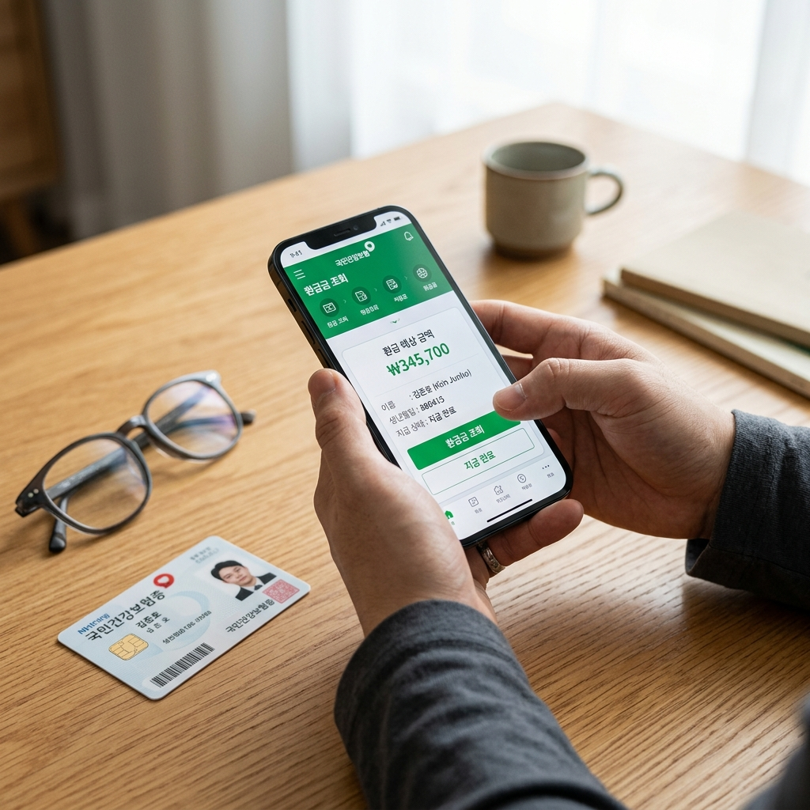
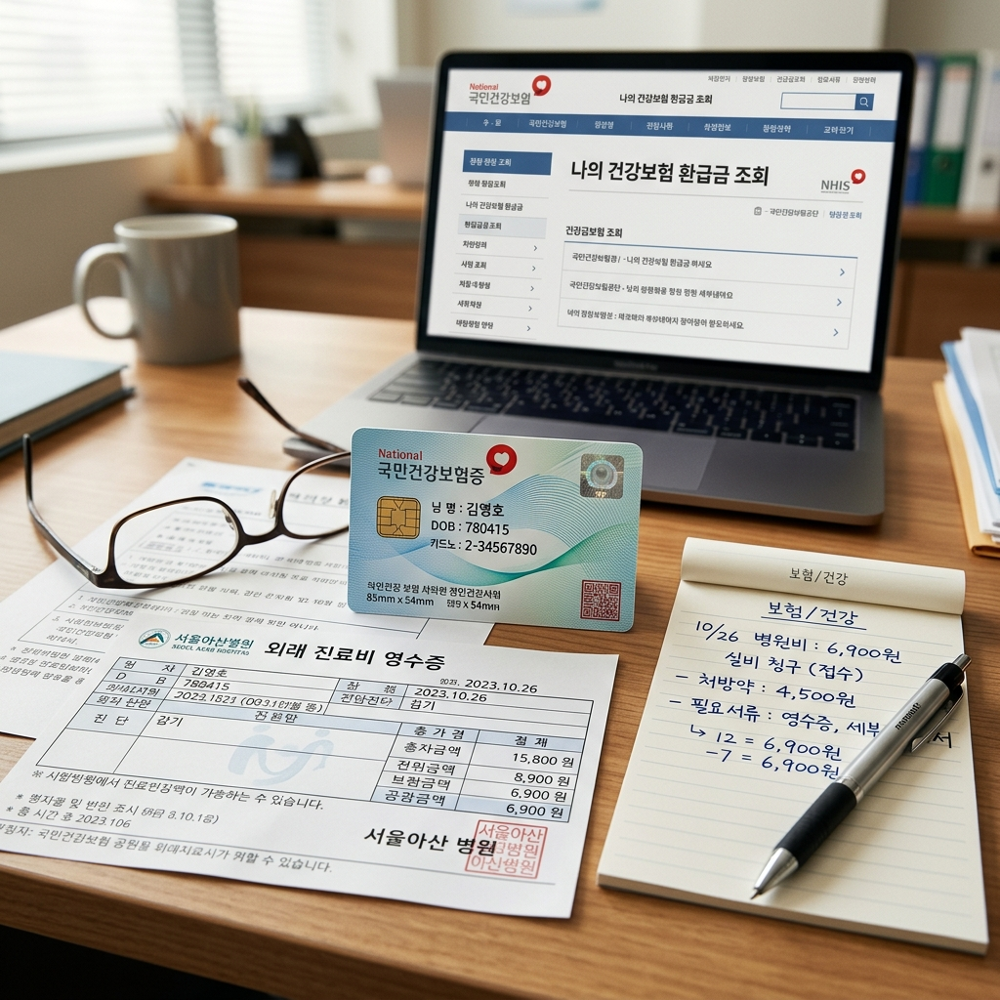

건강보험 본인부담상한제 환급금은 발생 시점으로부터 3년 이내에 청구하지 않으면 소멸됩니다. 공단에서 안내 문자나 우편을 보내주지만, 받지 못하거나 잊고 지나친 경우 청구 기한을 넘기는 사례가 발생합니다.
자신에게 환급금이 발생했는지 모르고 있다가 3년이 지나 확인해보면 이미 받을 수 없게 된 경우도 있습니다. 정기적으로 국민건강보험 앱 또는 홈페이지를 통해 환급금 조회를 해보는 습관이 중요합니다.
가족 중 병원 이용이 잦은 분이 있다면 대신 조회해주고 신청 기간을 안내해드리는 것도 좋은 방법입니다.

본인부담상한제는 1년 동안 낸 건강보험 본인부담금 합계가 소득 분위별 상한액을 초과할 경우, 초과분을 공단이 돌려주는 제도입니다.
본인부담금은 의원·병원·약국에서 환자가 직접 낸 금액이며, 비급여(미용 목적 수술, 상급 병실료 등)는 포함되지 않습니다.
가입자 유형에 따라 직장가입자는 보수에 기반한 소득 분위로, 지역가입자는 세대 종합 소득으로 분위가 결정됩니다. 소득이 낮을수록 상한액이 낮아 더 빨리 환급 기준을 충족합니다.
2026년 기준 최고 상한액은 843만 원(소득 상위 10%, 분위 10구간)이며, 최저 상한액은 87만 원(소득 하위 10%, 분위 1구간)입니다.
즉, 연간 건강보험 본인부담금이 87만 원을 넘으면 소득 최하위 분위에서는 초과분을 환급받을 수 있습니다.
자신의 소득 분위는 nhis.or.kr 로그인 후 '본인부담상한액 조회' 메뉴에서 확인할 수 있습니다. 분위별 정확한 금액은 매년 고시되므로 공단 공식 홈페이지에서 현재 연도 기준을 확인하세요.
가장 빠른 방법은 'The 건강보험' 앱을 이용하는 것입니다.
앱스토어 또는 구글플레이에서 'The 건강보험' 을 검색해 설치 후 공인인증서 또는 간편인증(카카오·네이버·PASS 등)으로 로그인합니다.
메인 화면에서 '본인부담상한액 환급금 조회'를 선택하면 과거 3년분의 환급금 발생 여부와 금액을 한눈에 확인할 수 있습니다.
PC를 선호하는 경우 nhis.or.kr → 민원 신청 → 개인 민원 → 환급금 조회 및 신청 경로로 동일하게 조회 가능합니다.
환급금이 조회되면 앱 또는 홈페이지에서 바로 신청이 가능합니다. 지급 계좌를 입력하고 신청 완료하면 1~3 영업일 이내에 입금됩니다.
공단 지사를 방문하거나 우편·팩스를 통한 신청도 가능합니다. 온라인 신청이 가장 빠르고 편리합니다.
신청 시 준비물은 본인 인증 수단(공인인증서 또는 간편인증)과 지급받을 계좌 정보입니다. 특별히 서류를 제출할 필요는 없습니다.
공단에서 환급 대상자를 확인하면 별도 신청 없이 자동으로 지급되는 경우도 있습니다. 기존에 계좌 정보가 등록된 경우 공단이 직권으로 지급 처리를 하기도 합니다.
다만 자동 지급이 되지 않는 경우가 더 많습니다. 특히 계좌 정보가 없거나 변경된 경우, 또는 신청 기한이 임박한 경우는 직접 신청하는 것이 안전합니다.
공단에서 보낸 우편이나 문자를 받았다면 반드시 확인하세요. 스팸함에 밀려 있거나 주소가 변경돼 받지 못한 경우가 있으니 정기 조회를 통해 능동적으로 확인하는 것이 좋습니다.
2026년부터 건강보험료 체납 이력이 있는 경우 환급금이 체납 보험료에 자동으로 상계됩니다. 즉, 환급금 전액을 현금으로 받지 못하고 체납액에 먼저 충당됩니다.
체납이 있는 경우 환급금 조회 후 남은 잔액이 지급 금액이 됩니다. 체납 해소와 환급금 수령이 동시에 처리되는 방식입니다.
체납 해소 후 남은 환급금이 있는 경우 계좌로 지급됩니다. 체납 상태에서도 조회 자체는 가능하니 먼저 확인해보세요.
건강보험 환급금의 소멸시효는 환급금이 발생한 날로부터 3년입니다. 이 기간이 지나면 청구권이 소멸하여 더 이상 받을 수 없게 됩니다.
예를 들어 2023년에 발생한 환급금은 2026년까지 신청해야 합니다. 매년 한 번씩 앱이나 홈페이지에서 조회하는 것만으로도 소멸 위험을 예방할 수 있습니다.
일정 금액 이상의 환급금은 공단에서 문자·우편 안내를 발송하지만, 모든 경우가 해당되지는 않습니다. 소액이거나 연락처가 오래된 경우 안내를 받지 못할 수 있습니다.
본인이 아닌 가족 구성원의 환급금을 대신 신청할 수 있습니다. 위임장과 대리인 신분증, 위임자 신분증 사본이 필요합니다.
공단 지사 방문 시 담당자에게 안내를 받으면 처리됩니다. 노인이나 디지털 접근이 어려운 가족을 대신해 확인해주고 신청을 대행하는 것이 좋은 효도가 될 수 있습니다.
직계가족의 경우 대리 신청 절차가 비교적 간단하게 처리됩니다.

비급여는 상한액 계산에 포함되지 않습니다. 미용·성형 시술, 실손보험 처리 항목, 상급 병실료를 많이 냈다고 해서 환급이 늘어나지 않습니다. 급여 본인부담금만 집계됩니다.
앱 로그인이 안 된다면 PC 홈페이지(nhis.or.kr)를 대신 이용하거나 고객센터(1577-1000)에 문의하세요. 공인인증서 갱신이 필요한 경우도 있습니다.
금액이 예상보다 적다면 병원에서 직접 수납한 금액 전체가 아닌 급여 본인부담 합계 기준으로 상한액을 비교하기 때문입니다. 영수증상의 '본인부담금' 항목을 참고하세요.
궁금한 점은 건강보험공단 고객센터 1577-1000으로 문의하면 상세히 안내받을 수 있습니다.